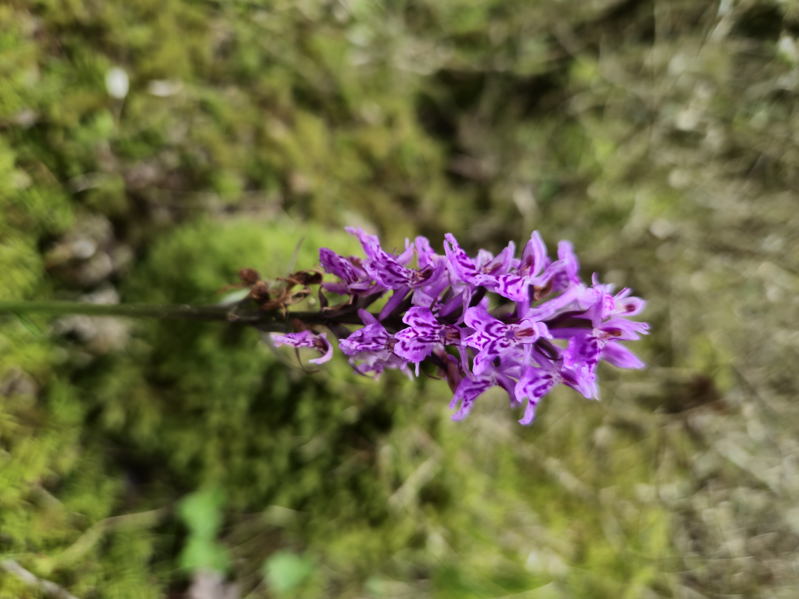
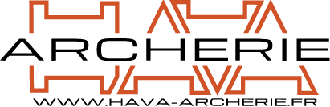
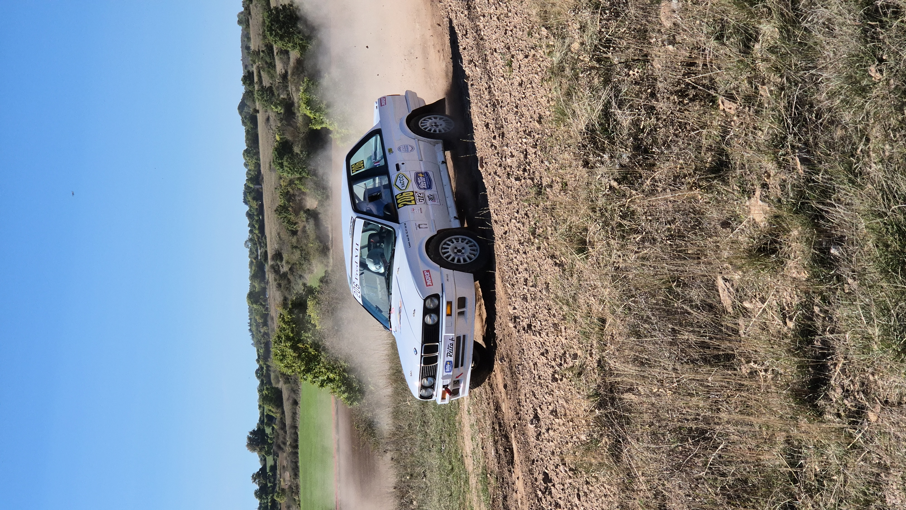
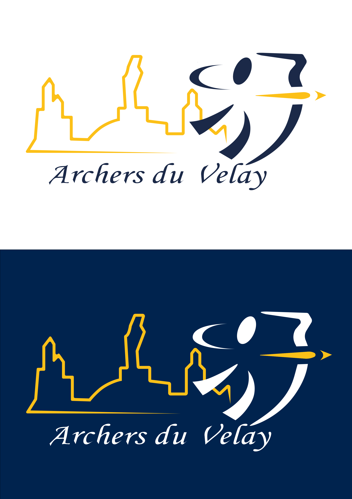

Tous
mes projets.
Projets d'études en BUT MMI et réalisations personnelles : graphisme, édition, vidéo et web.

Campagne Lacoste
Affiches print, tournage vidéo et site WordPress autour d'une veste connectée.
Voir le projet → 02
Union Cycliste du Puy-en-Velay
Campagne 360° « Le vrai record » : refonte d'identité (27 déclinaisons), affiches A4 print & web, réseaux sociaux et spot publicitaire 30s.
Lire l'article → 03
Mes créations
Photographies et explorations visuelles personnelles.
Lire l'article → 04
Hava Archerie
Refonte graphique de l'identité de marque.
Lire l'article → 05
Magazine Interface
Coordination d'équipe, recherche de sponsors, maquette et rédaction d'un article.
Lire l'article → 06
FlèchOptim
Un sélecteur interactif pour choisir et comparer des flèches de tir à l'arc.
Lire l'article → 07
Tour de France
Série de cartes graphiques consacrées aux coureurs cyclistes.
Lire l'article → 08
Rallye des Cardabelles
Reportage photo au cœur d'une spéciale, le 5 octobre 2024.
Lire l'article → 09
Archers du Velay
Modernisation du logotype et création de la charte graphique pour le club du Puy-en-Velay.
Lire l'article → 10
After Effects & Storyboard
Découpage technique UCPV (14 plans), parallaxe 2.5D, animations de logos et reels vidéo.
Lire l'article →